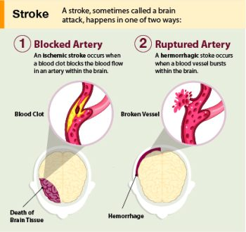
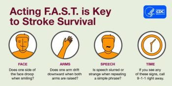

11.2: Stroke
Overview. A stroke is a medical emergency involving an interruption of blood flow to the brain. The interrupted blood flow prevents brain tissue from getting oxygen and nutrients. In turn, neuronal function is impaired within seconds, and brain cells start to die within minutes. Stroke is the leading cause of long-term adult disability and was the fifth leading cause of death in the United States in 2021 (CDC, 2023a). Long-term effects of stroke depend on the extent and location of the brain damage and include paralysis, problems with cognition or memory, issues speaking or understanding speech, emotional disturbances, pain, and unusual bodily sensations (NINDS, 2023a).
Types of Strokes. Strokes can be classified into two major categories: ischemic (pronounced ‘ih-skee-muhk’) and hemorrhagic (pronounced “heh-mr-a-juhk”). Most strokes are ischemic. Ischemic strokes are caused by interruption of the blood supply to one or more regions of the brain. The interruption is most commonly caused by a blood clot or cellular debris that blocks a blood vessel in the brain (NINDS, 2023a). A clot might develop at the site of the blockage (“thrombosis”) or it might create a blockage after moving from another part of the body (“embolism.”) The third cause of ischemic stroke is “stenosis” in which an artery narrows, often due to plaques or fatty deposits on artery walls. The other major category of stroke, hemorrhagic stroke, happens when an artery in the brain leaks blood or ruptures (breaks open). The leaked blood puts too much pressure on brain cells and damages them.

Cell death. After a stroke, some brain cells die because they stop getting the oxygen and nutrients needed to function. Other brain cells die because they are damaged by sudden bleeding in or around the brain. Some brain cells die quickly, but many linger in a compromised or weakened state for several hours. Stroke causes permanent brain damage over minutes to hours (NINDS, 2023a).
One specific cellular mechanism underlying ischemic-induced cell death is glutamate excitotoxicity. Glutamate is a major excitatory neurotransmitter important for memory and long-term potentiation (covered in Chapter 7). Glutamate is key for healthy brain function, but too much glutamate can kill neurons—this is known as glutamate excitotoxicity. When a stroke blocks oxygen-rich blood supply to the brain, negatively charged ATP levels drop, making the interior of the neuron more positively charged. This leads to excess glutamate released into the synapse, which causes the postsynaptic neuron to fire excessively; calcium ions flood the postsynaptic cell, cytotoxic enzymes are activated, and it eventually dies. Critically, as a neuron dies, it releases its glutamate reserves, which restarts the process in nearby cells. This glutamate excitotoxicity repeats itself in a vicious cycle that spreads quickly and kills many neurons in minutes (Kuang, 2019; Mark, 2001).
Identifying stroke. With stroke, the sooner treatment begins, the better. Knowing the signs of stroke and calling 911 immediately can help save a relative, neighbor, or friend. A mnemonic for remembering the signs of strokes is FAST (standing for Facial droop, Arm weakness, Speech difficulty, Time to call emergency services, see Figure 2). With timely treatment, it is possible to save brain cells and greatly reduce the damage (NINDS, 2023a).

Treatments. At the emergency room, patients can receive drugs that dissolve a clot. These drugs will not work if the stroke occurred more than three hours before arriving at the hospital or was caused by a burst blood vessel (Clark et al., 2018). For those hemorrhagic strokes, surgeons may clip blood vessels to stop bleeding, drain excess fluid, or even temporarily remove part of the skull to relieve pressure from swelling.
Recovery from a stroke can take weeks, months, or even years. Some people fully recover, whereas others have lifelong disabilities. Treatment following a stroke can include blood pressure medication, healthy lifestyle changes to prevent future strokes, and physical and speech therapy.
Risk factors of stroke. Despite the possibility of death or long-term disability, there is some “good news”: About 4 in 5 strokes are preventable (CDC, 2023b). Risk factors can be categorized as modifiable and nonmodifiable. Nonmodifiable risk factors include age (older adults have a higher risk), sex (men have a higher risk), and race/ethnicity (stroke incidence among Black and Hispanic Americans is almost double that of White Americans, and Black and Hispanic Americans tend to have strokes at a younger age) (Boehme et al. 2017; NINDS, 2023a). The “good news” is that some risk factors are modifiable and can be controlled by lifestyle and behavior changes. High blood pressure is the most important risk factor and can be managed by eating a healthy diet (low fat, low cholesterol, low salt, whole grains, and veggies), exercising (2.5+ hours per week), not drinking too much alcohol, and not smoking (smokers are twice as likely to have a stroke) (CDC, 2023b).
Finally, air pollution, noise pollution, and even light pollution are linked to a higher risk of stroke, hypertension, and other cardiovascular diseases (Boehme, 2017; Van Kempen & Babisch, 2012). While these factors are modifiable, they are not controllable at the individual level, especially for poor people (who have fewer housing options and often can’t afford to move away from such environmental hazards) (Crea, 2021). Thus, some prevention measures are best viewed at the population level, and this underscores the connection between health and sensible public policy that mitigates risk factors.
Text Attributions
This section contains material adapted from:
National Institute of Neurological Disorders and Stroke (NINDS) (2023). Stroke. https://www.ninds.nih.gov/health-information/disorders/stroke Public domain.
Media Attributions
- Stroke Medical Illustration © CDC is licensed under a Public Domain license
- FAST Graphic © CDC is licensed under a Public Domain license


Strokes caused by interruption of blood supply
Strokes caused by a ruptured or leaking blood vessel